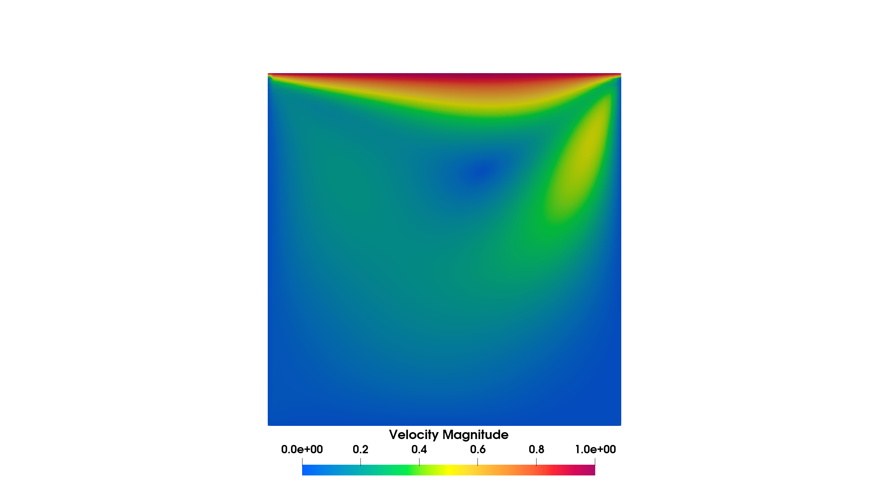

Demo: Steady Navier-Stokes
This demo code demonstrates how to solve a steady state incompressible Navier-Stokes equation using the canonical lid driven cavity problem. The full source code can be found in demo/demo_steady_navier_stokes/demo_steady_navier_stokes.py.
This problem is the steady state incompressible Navier-Stokes problem in a unit square domain.
Strong form
Where the stress term is
The boundary conditions are
Implementation
First we import the relevant modules and define functions representing the boundary conditions.
Next, we define the mesh.
# Create mesh
ne = 64
mesh = RectMesh(0.0, 0.0, 1.0, 1.0, 1/ne)
Next, we define the incompressible Navier Stokes solver using the SteadyNavierStokes physics.
Here we will use the unstable elements combination Q1P1 and we will add stabilization.
# Build Navier-Stokes problem
nse = SteadyNavierStokes(mesh)
nse.set_element('CG', 1, 'CG', 1)
nse.build_function_space()
Next the problem parameters are defined and the weak formulation is set. We call add_stab() to add the stabilization terms.
In this implementation, we include both the SUPG and PSPG stabilization.
Please see Steady Navier Stokes Physics for more detail.
# Set physical parameters
Re = 100.0
mu = 1.0 / Re
rho = 1.0
nse.set_density(rho)
nse.set_dynamic_viscosity(mu)
# Set weak form and stabilization
nse.set_weak_form()
nse.add_stab()
Next, we define the boundary conditions. We use the previously defined functions to set the velocity on the walls and lid, and we set a zero pressure point constraint at the bottom left corner of the domain. The boundary conditions are defined above as arrays and passed onto dolfinx Function objects built off the sub spaces of the mixed function space.
# Create boundary condition functions
zero_v = dolfinx.fem.Function(V_u)
zero_v.interpolate(no_slip)
inlet_v = dolfinx.fem.Function(V_u)
inlet_v.interpolate(u_inlet)
zero_p = dolfinx.fem.Function(V_p)
zero_p.x.array[:] = 0.0
# Define boundary conditions
u_bcs = {
1: {'type': 'dirichlet', 'value': zero_v},
2: {'type': 'dirichlet', 'value': zero_v},
3: {'type': 'dirichlet', 'value': zero_v},
4: {'type': 'dirichlet', 'value': inlet_v},
}
p_bcs = {
1: {'type': 'dirichlet', 'value': zero_p},
}
bc_dict = {'u': u_bcs,
'p': p_bcs}
nse.set_bcs(bc_dict)
Next, we define the nonlinear problem and solver. We use a Krylov solver and adjust the solver parameter using a function that sets the PETSc KSP options.
# Define problem
problem = NonLinearProblem(nse)
# Custom KSP setup function
def my_custom_ksp_setup(ksp):
ksp.setType(ksp.Type.FGMRES)
ksp.pc.setType(ksp.pc.Type.LU)
ksp.setTolerances(rtol=1e-8, atol=1e-10, max_it=500)
ksp.setMonitor(ConvergenceMonitor('ksp'))
# Create nonlinear solver
solver = NonLinearSolver(mesh.msh.comm, problem, outer_ksp_set_function=my_custom_ksp_setup)
Finally, we solve the problem and write the results.
# Solve the problem
solver.solve()
nse.write()
The solution is shown below.
{kind=link}
Full Script
import dolfinx
import numpy as np
from flatiron_tk.mesh import RectMesh
from flatiron_tk.physics import SteadyNavierStokes
from flatiron_tk.solver import ConvergenceMonitor
from flatiron_tk.solver import NonLinearProblem
from flatiron_tk.solver import NonLinearSolver
# Define boundary conditions functions
def no_slip(x):
return np.stack((np.zeros(x.shape[1]), np.zeros(x.shape[1])))
def u_inlet(x):
return np.stack((np.ones(x.shape[1]), np.zeros(x.shape[1])))
def zero_pressure(x):
return np.zeros(x.shape[1], dtype=dolfinx.default_scalar_type)
# Create mesh
ne = 64
mesh = RectMesh(0.0, 0.0, 1.0, 1.0, 1/ne)
# Build Navier-Stokes problem
nse = SteadyNavierStokes(mesh)
nse.set_element('CG', 1, 'CG', 1)
nse.build_function_space()
# Set physical parameters
Re = 100.0
mu = 1.0 / Re
rho = 1.0
nse.set_density(rho)
nse.set_dynamic_viscosity(mu)
# Set weak form and stabilization
nse.set_weak_form()
nse.add_stab()
# Velocity and pressure subspaces
V_u = nse.get_function_space('u').collapse()[0]
V_p = nse.get_function_space('p').collapse()[0]
# Create boundary condition functions
zero_v = dolfinx.fem.Function(V_u)
zero_v.interpolate(no_slip)
inlet_v = dolfinx.fem.Function(V_u)
inlet_v.interpolate(u_inlet)
zero_p = dolfinx.fem.Function(V_p)
zero_p.x.array[:] = 0.0
# Define boundary conditions
u_bcs = {
1: {'type': 'dirichlet', 'value': zero_v},
2: {'type': 'dirichlet', 'value': zero_v},
3: {'type': 'dirichlet', 'value': zero_v},
4: {'type': 'dirichlet', 'value': inlet_v},
}
p_bcs = {
1: {'type': 'dirichlet', 'value': zero_p},
}
bc_dict = {'u': u_bcs,
'p': p_bcs}
nse.set_bcs(bc_dict)
nse.set_writer('output', 'pvd')
# Define problem
problem = NonLinearProblem(nse)
# Custom KSP setup function
def my_custom_ksp_setup(ksp):
ksp.setType(ksp.Type.FGMRES)
ksp.pc.setType(ksp.pc.Type.LU)
ksp.setTolerances(rtol=1e-8, atol=1e-10, max_it=500)
ksp.setMonitor(ConvergenceMonitor('ksp'))
# Create nonlinear solver
solver = NonLinearSolver(mesh.msh.comm, problem, outer_ksp_set_function=my_custom_ksp_setup)
# Solve the problem
solver.solve()
nse.write()